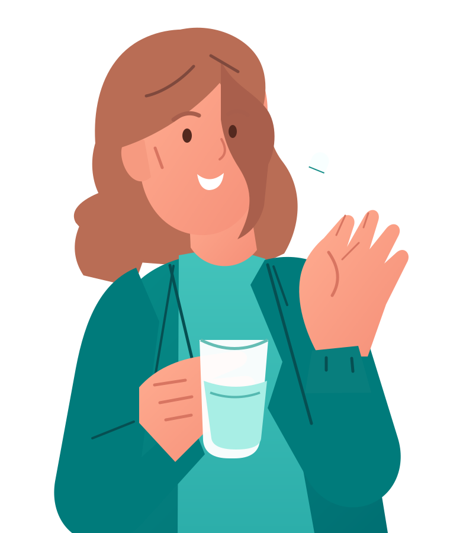

✦
✧

A SHORT INTERACTIVE STORY
A small habit.
A bigger consequence.
We often take antibiotics without thinking twice. But what happens when we use them when they aren't needed?

A SHORT INTERACTIVE STORY
We often take antibiotics without thinking twice. But what happens when we use them when they aren't needed?